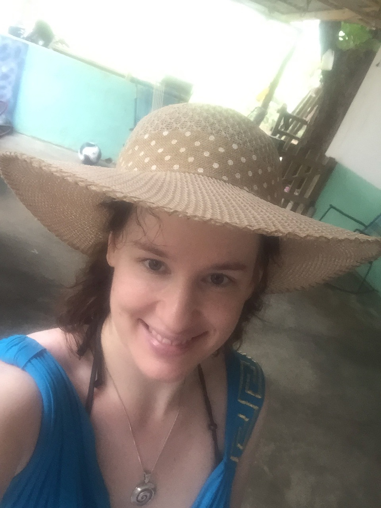
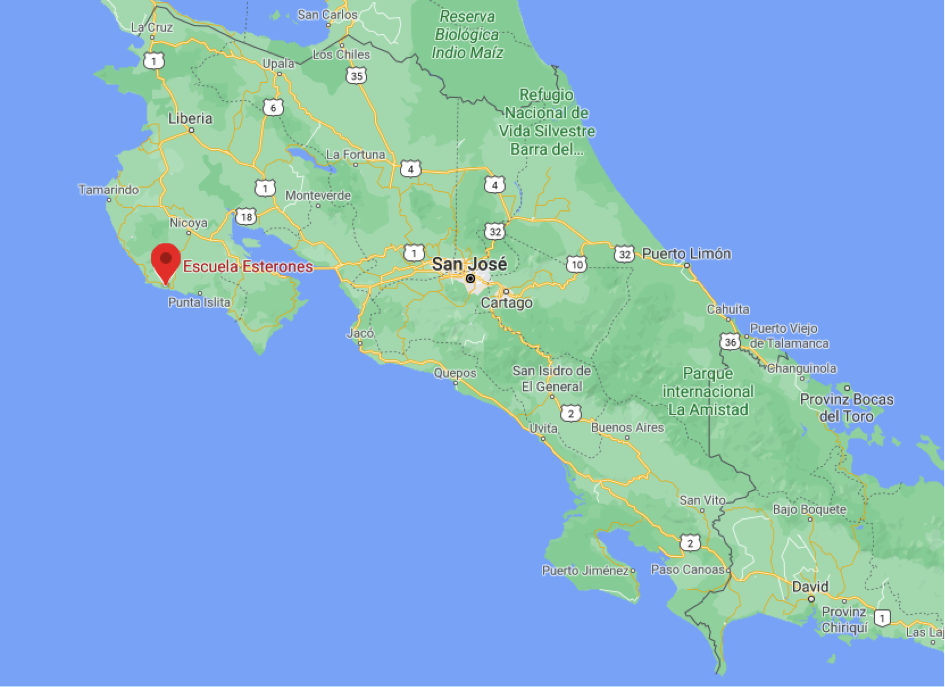

Warum geht's?
Hallo und herzlich willkommen auf meinem Blog über Volunteering in Costa Rica. Ich möchte euch hier mehr über meine Erlebnisse in Costa Rica erzählen. Zum einen in diesem Intro über die wichtigsten W-Fragen, zum anderen aber auch etwas ausführlicher über das Land Costa Rica, Reisen in Costa Rica und das Leben (bei einer Gastfamilie) in Costa Rica. Bei Fragen stehe ich euch gerne via Mail zur Verfügung.
Wer bin ich?
 Mein Name ist Corina. Ich bin im Februar 1990 im Appenzellerland zur Welt gekommen. Seit über 10 Jahren arbeite ich für eine Schweizer Bank als Kundenberaterin. Ein Job, der mir viel Freude bereitet und dank welchem ich jeden Tag neue Leute kennenlernen darf. In meiner Freizeit liebe ich es, zu reisen und Neues zu entdecken. Da es in fernen Ländern doppelt so interessant ist, wen man sich mit den Menschen vor Ort austauschen kann, lerne ich gerne Sprachen.
Wieso Volunteering und mit wem?
Schon seit längerer Zeit hatte ich den Wunsch, einige Monate in einem fernen Land zu leben. Eine Reise sollte zwar Teil dieses Erlebnisses sein, jedoch nicht im Mittelpunkt stehen. Vielmehr ging es mir darum, die Möglichkeit zu haben, so zu leben wie die Leute vor Ort. Ebenfalls hatte ich Lust, einmal etwas ganz anderes zu machen als zu Hause. Da ich schon immer gerne mit Kindern gearbeitet habe, war relativ schnell klar, dass ich gerne an einer Schule unterichten möchte. So stiess ich auf die Organisation firsthand Costa Rica.
Wo war ich?
Bezüglich des Landes bzw. der Ortschaft hatte ich folgende Auswahlkriterien:
- Spanisch oder Portugiesisch
- am Meer
- sommerliches Wetter
- idealerweise ein Dorf
Die Pazifkküste Costa Ricas erfüllte alle obigen Punkte und passte daher perfekt. Da es das ganze Jahr über nie kälter als 20 Grad wird, spielte es auch keine Rolle ob gerade Regen- oder Trockenzeit war. Von firsthand Costa Rica wurde ich dann der Schule von Esterones in Guanacaste zugeteilt.
Was habe ich gemacht?
Die Idee des Unterrichten Projekts ist es, Kindern nach der Schule Englisch zu unterrichten. Da unserer Klasse jedoch in zwei Gruppen aufgeteilt war und somit sowohl am Morgen wie auch am Nachmittag ordentlicher Unterricht stattfand, war es schwierig, ein passendes Zeitfenster zu finden. So kam es dazu, dass wir (meine Kollegin Viki und ich) stattdessen im regulären Schulbetrieb mithalfen. Dazu zählten:
- Lese- und Schreibeübungen mit den Kleinsten
- Mathematikunterricht mit den 1. bis 6. Klässlern
- Korrigieren von Hausaufgaben
- Hausaufgabe Hilfe an Tagen, an denen die Schule ausfiel
- Organisatorische Dinge, wie das Nachführen der verbrauchten Lebensmitteln
- Unterhaltsarbeiten am Schulhaus (v.a. Wände neu Streichen)
Es gab also immer mehr als genug zu tun. Jedoch lag es an uns, uns an der Arbeit zu beteiligen. Lucia, die Lehrerin und Direktorin, war offen uns Arbeiten abzugeben. Dabei ist aber auch eingies an Eigeninititive gefragt.
Wie war's?
Es ist jetzt genau drei Jahre her, seit ich nach Costa Rica gereist bin. Aber noch heute denke ich regelmässig und sehr gerne an meine Zeit in Esterones zurück. Ich durfe in jenen drei Monaten Erfahrungen sammeln, welche mich ein Leben lang prägen werden. Ich würde sagen, dass ich in dieser Zeit mehr von den Ticos gelernt habe, als umgekehrt. Die Uhr geht etwas langsamer, man sieht alles nicht ganz so eng, man lebt vor allem im hier und jetzt und man braucht wenig Materielles, um glücklich zu sein. Mehr details hierzu findet ihr unter dem Abschnitt "Leben bei einer Gastfamilie".
Wem würde ich es weitermpfehlen?
Jedem, der gerne in eine anderer Kultur eintauchen möchte. Dazu gehört aber auch, dass man Gewisse Gewohnheiten ablegt und sich an neue Umstände anpassen kann. Auf dem Lande geht es sehr ruhig zu und her und somit ist man defintiv falsch, wenn man die grossen Parties sucht. Dafür kennt man nach kurzer Zeit das ganze Dorf und hat die einmalige Gelegenheit, neue Perspektiven kennenzulernen und davon zu lernen.